Herberg ’t Plein ondersteunt de selectie tijdens het zaalseizoen met de verzorging van sportmaaltijden voor de trainingen op dinsdag en donderdag. Jaap en Petra de Boer dragen sport in Meppel in het algemeen, maar zeker ook DOS’46,
een warm hart toe. Om dat warme gevoel om te zetten in concrete steun verzorgt de keuken van Herberg al enkele
jaren de inwendige mens van onze selectie. De eerste jaren gebeurde dit in sporthal De Eendracht, de laatste jaren eet
de selectie bij Herberg ‘t Plein in Meppel. Dit wordt vaak gecombineerd met een bespreking of gesprekjes tussen staf
en spelers. Het geeft de spelers van buitenaf de mogelijkheid om na de studie of het werk naar Meppel te rijden en
daar rustig te eten.
QUOTES VAN DE SELECTIE
 
